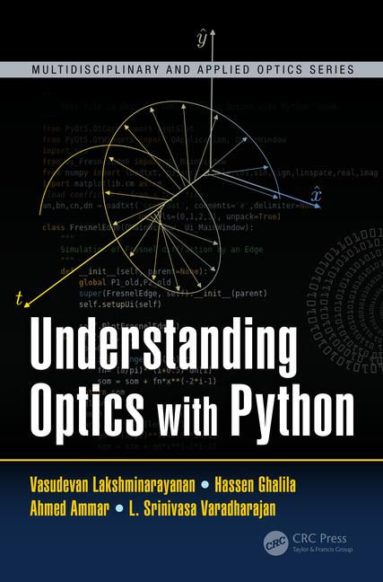
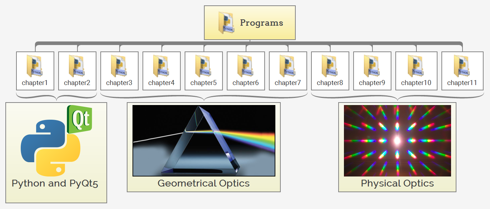

Understanding Optics with Python
Jan 27, 2018
Table of contents
About the book
Feature
Summary
Python Programs
Installing Anaconda Distribution
Programs Folder
About the book
Feature
- Discusses most standard topics of traditional physical and geometrical optics through Python and PyQt5
- Provides visualizations and in-depth descriptions of Python’s programming language and simulations.
- Includes simulated laboratories where students are provided a "hands-on" exploration of Python software.
- Coding and programming featured within the text are available for download on the book’s corresponding website.
Summary
This book introduces optics through the use of simulations, namely, Python. Students, researchers, and engineers will be able to use Python simulations to better understand the basic concepts of optics and professors will be able to provide immediate visualizations of the complex ideas. Readers will learn programming in Python. Throughout this book, a simulated laboratory will be provided where students can learn by "hands on" exploration. The text will cover most of the standard topics of traditional optics.

Python Programs
Installing Anaconda Distribution
Anaconda Distribution is an open source, easy-to-install high performance Python and R distribution, with the conda package and environment manager and collection of 1,000+ open source packages with free community support.For information on installing Anacond on Linux and using the graphical installers for Windows or macOS, see the instructions for installing Anaconda.
Once you have installed the distribution, you can launch Spyder IDE from the Anaconda Navigator and start using all Python programs within the book.

Programs Folder
The folder contains Python programs for the eleven chapters of the book and they are classified into three main parts: Python and PyQt5, Geometrical Optics and Physical Optics.

The table below shows all the listings introduced in the book and the path to the corresponding Python scripts in the folder: